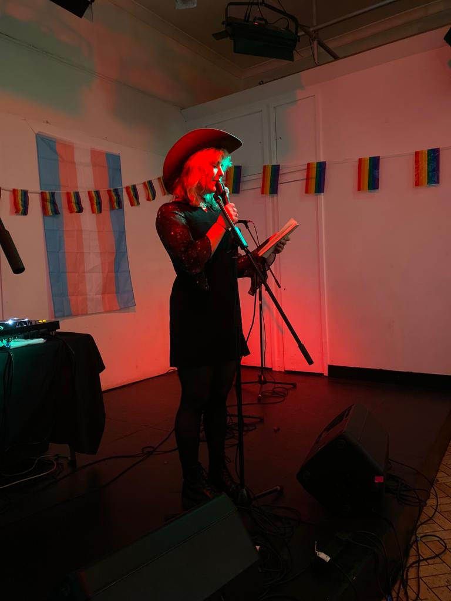
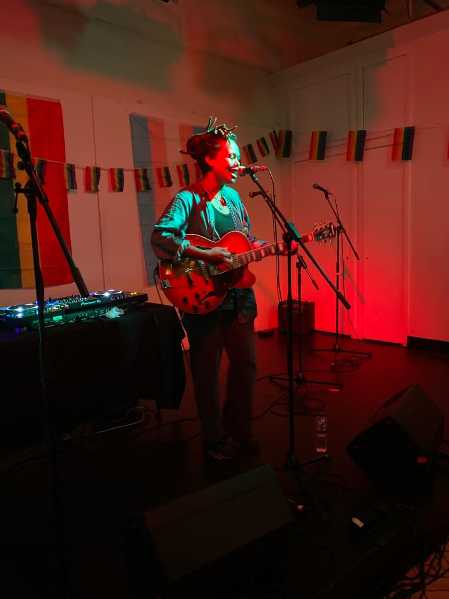
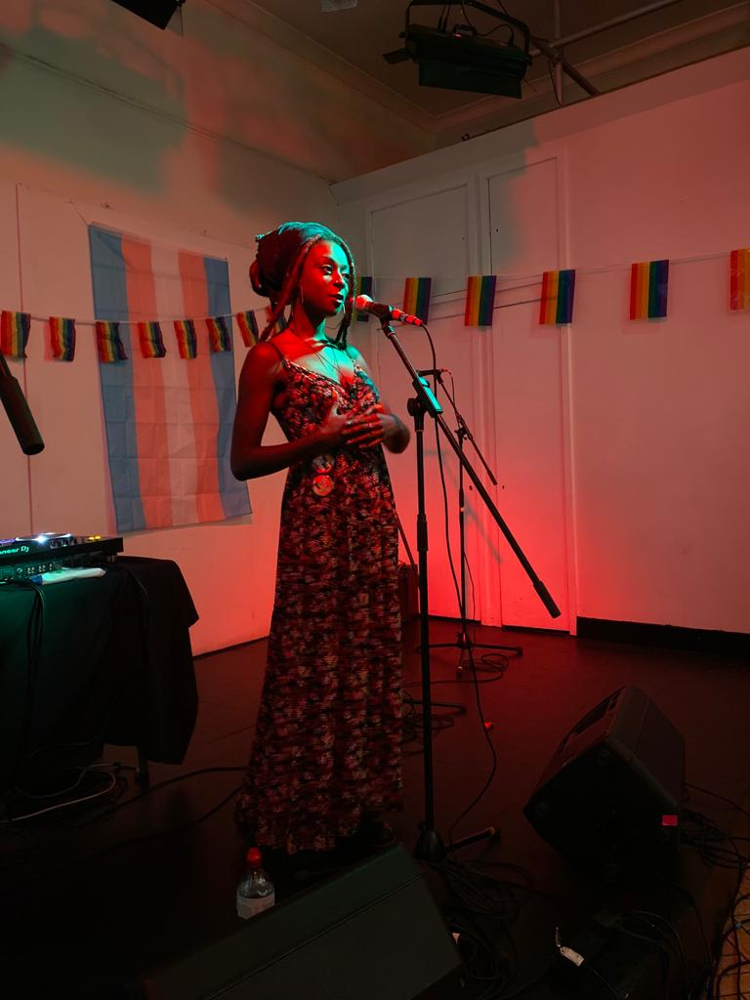
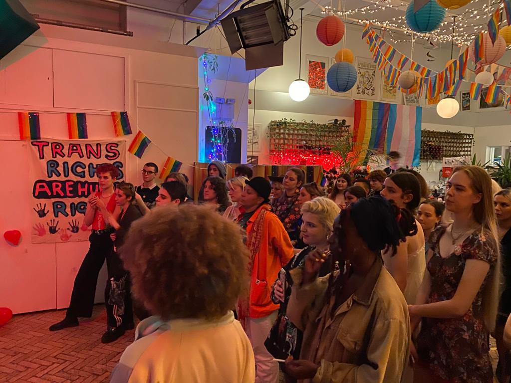
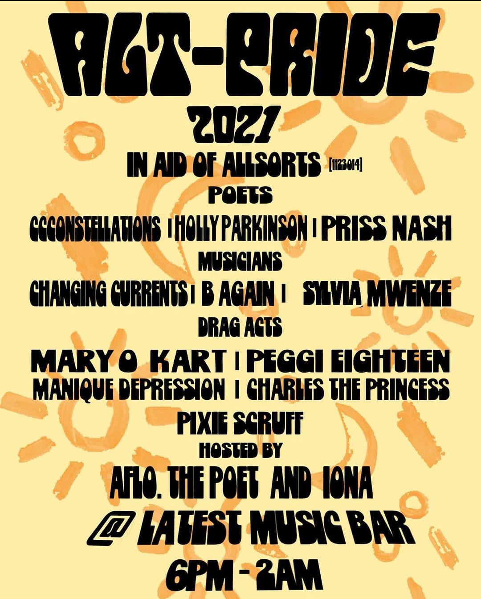

Alternative Pride




An Alternative Pride Event held at Latest Music Bar, curated and organised alongside Shiloh Bingham
The event brought together a queer musicians, DJs, poets, drag queens and kings, including: ccconstellations Holly Parkinson Priss Nash Changing Currents B Again Sylvia Mwenze Mary O Kart Manique Depression Charles the Princess Pixie Scruff Aflo. the Poet Iona
